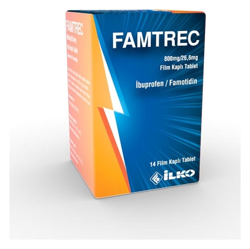

Famtrec 800 mg/26,6 mg Film Kaplı Tablet , 14 Adet

Ne için kullanılır
KT · Bölüm 1FAMTREC, nonsteroidal anti-inflamatuvar ilaç olan ibuprofen ve histamin H
-reseptör blokörü olan famotidin etkin maddelerini içermektedir.
FAMTREC mavi renkli, oval, bikonveks, çentiksiz film kaplı tablettir.
Çocuk kilitli kapağı olan her bir yüksek yoğunluklu polietilen (HDPE) şişe içerisinde 30 veya 90 film kaplı tablet içerir.
FAMTREC, -Akut veya kronik kas iskelet ağrılarının rahatlatılması, -Cerrahi operasyondan sonra görülen ağrı, -Adet dönemi ağrılarının (primer dismenore) giderilmesinde ve bu endikasyonlar için ibuprofen alan hastalarda ibuprofen kullanımının neden olabileceği mide ve/veya duodenal ( oniki parmak bağırsak) ülser riskini azaltmaya yardımcı olur.
Doktorunuza danışmadan, ilacınızı kullanmayı bırakmayınız.